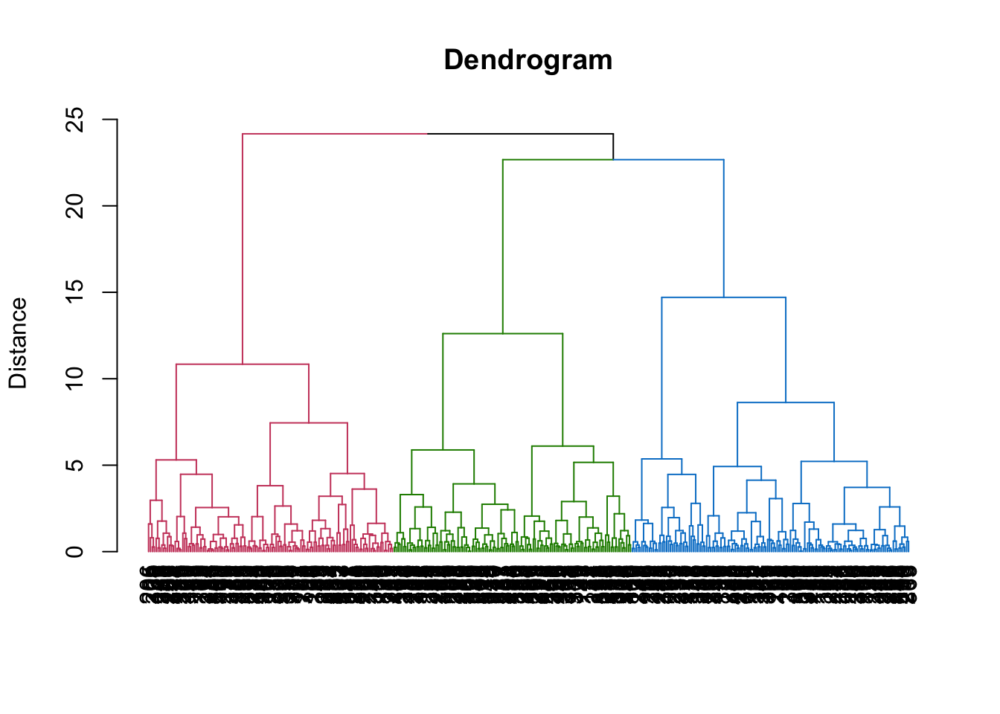
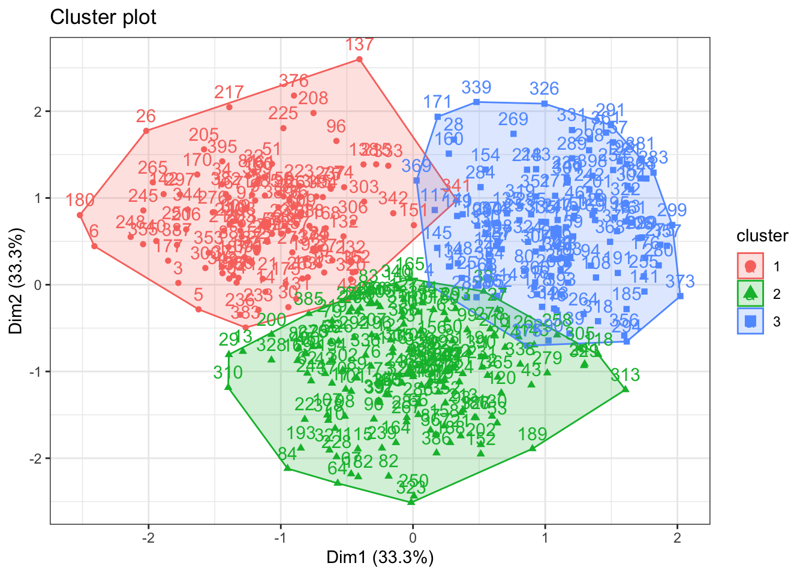

Chapter6 Clustering
EFA_feature = EFA_with_score %>%
dplyr::select(PA1, PA2,PA4)
# Run a cluster analysis on a distance matrix and using the Ward method
c<- hclust(dist(EFA_feature), method="ward.D2")
# Dendrogram
library(dendextend)##
## ---------------------
## Welcome to dendextend version 1.15.2
## Type citation('dendextend') for how to cite the package.
##
## Type browseVignettes(package = 'dendextend') for the package vignette.
## The github page is: https://github.com/talgalili/dendextend/
##
## Suggestions and bug-reports can be submitted at: https://github.com/talgalili/dendextend/issues
## You may ask questions at stackoverflow, use the r and dendextend tags:
## https://stackoverflow.com/questions/tagged/dendextend
##
## To suppress this message use: suppressPackageStartupMessages(library(dendextend))
## ---------------------##
## Attaching package: 'dendextend'## The following object is masked from 'package:data.table':
##
## set## The following object is masked from 'package:stats':
##
## cutreeplot(set(as.dendrogram(c),
"branches_k_color", # to highlight the cluster solution with a color
k = 3),
ylab = "Distance",
main = "Dendrogram",
cex = 0.2)
set.seed(42)
EFA_kmeans <- kmeans(EFA_feature , centers = 3)
EFA_kmeans## K-means clustering with 3 clusters of sizes 118, 157, 125
##
## Cluster means:
## PA1 PA2 PA4
## 1 0.695 -1.1331 0.0125
## 2 -1.011 -0.0377 -0.0643
## 3 0.613 1.1171 0.0690
##
## Clustering vector:
## [1] 2 3 1 3 1 1 3 2 1 2 2 1 2 1 3 3 3 3 2 2 2 2 3 2 2 1 2 3 2 1 2 1
## [33] 2 1 1 1 1 3 1 1 3 2 2 2 2 3 2 1 1 2 1 1 2 1 2 2 3 1 3 2 1 2 2 2
## [65] 3 2 2 3 3 1 3 2 2 1 1 2 2 1 2 3 1 2 2 2 1 2 2 1 2 2 1 3 2 3 1 1
## [97] 1 2 2 2 2 1 2 2 2 3 2 3 1 1 3 3 2 3 2 3 3 2 2 2 1 2 3 1 3 2 2 2
## [129] 3 2 1 1 1 3 3 1 1 1 3 3 3 1 2 2 3 2 3 3 2 2 1 2 3 3 1 2 3 2 1 3
## [161] 3 1 3 2 2 2 1 1 2 1 3 2 2 3 1 3 1 3 3 1 2 2 3 1 3 2 1 2 2 1 3 1
## [193] 2 2 3 2 2 3 3 2 3 2 1 2 1 1 2 1 2 3 1 3 2 1 1 2 1 3 2 1 3 2 1 2
## [225] 1 2 3 2 3 2 2 1 1 1 1 1 1 3 2 3 2 3 3 2 1 2 3 1 2 2 1 2 3 3 3 2
## [257] 1 2 2 3 1 1 1 3 1 3 2 2 3 2 1 2 1 2 3 1 3 2 2 3 1 3 3 3 1 2 2 1
## [289] 3 3 3 2 2 3 3 2 1 3 3 1 3 2 1 3 2 1 3 3 1 2 2 2 2 3 2 3 2 3 3 1
## [321] 2 3 2 3 2 3 2 2 2 3 3 2 1 3 3 2 2 2 3 2 1 1 1 1 1 3 2 3 1 2 3 2
## [353] 1 2 1 3 3 3 1 3 3 3 2 3 2 2 2 3 3 2 1 1 3 3 3 1 3 2 1 1 3 1 1 3
## [385] 2 2 1 2 1 2 1 2 3 1 1 2 2 3 3 2
##
## Within cluster sum of squares by cluster:
## [1] 162 255 207
## (between_SS / total_SS = 47.9 %)
##
## Available components:
##
## [1] "cluster" "centers" "totss" "withinss"
## [5] "tot.withinss" "betweenss" "size" "iter"
## [9] "ifault"# factor plot
fviz_cluster(EFA_kmeans,
data = EFA_feature) +
theme_bw()
6.1 Interpretation of the results

6.1.2 Heatmap
# Average for each cluster with one step
vars_cluster_agg = aggregate(vars_cluster[, 2:31],
by = list(cluster = EFA_kmeans$cluster),
FUN = mean)
df <- vars_cluster_agg %>%
gather(variable, value, -cluster) %>% # to transfrom from wide to long format
mutate(variable = fct_rev(factor(variable)))
df %>% # to reverse the order of car makes' names on the plot
ggplot(aes(x = factor(cluster), y = variable)) +
geom_tile(aes(fill = round(value, digits = 2))) +
geom_text(aes(label = round(value, digits = 2)), color="white") +
scale_x_discrete(expand = c(0,0)) +
scale_y_discrete(expand = c(0,0)) +
scale_fill_gradient("Average\n value", low = "lightgrey", high = "darkblue") +
theme_minimal() +
labs(title = "Average preferences in each cluster",
x = "Cluster",
y = " ") +
theme(legend.position="right",
plot.title = element_text(size = 10, face = "bold", hjust = 0.5),
axis.ticks = element_blank())